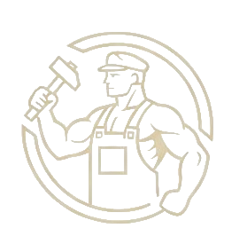
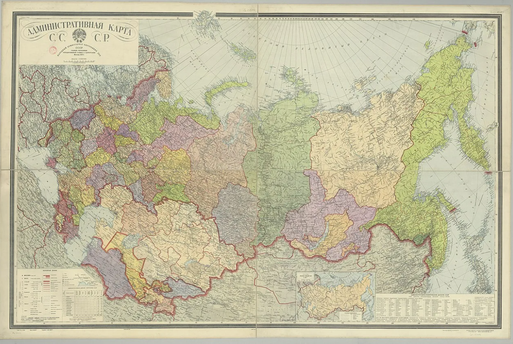

Столица СССР. Кремль - кабинет Сталина. Лубянка - здание НКВД. Дом на набережной - жильё партийной элиты.
Бутовский полигон — место массовых расстрелов НКВД в 1937–1938 гг. Более 20 000 жертв. Находился под Москвой.
Кировский и Балтийский заводы. Убийство Кирова (1 декабря 1934, Смольный) - повод для начала Большого террора.
Соловецкий лагерь особого назначения. 1923–1939. Первый крупный лагерь ГУЛАГа. Монастырь, переоборудованный под тюрьму. До 50 000 заключённых.
Строительство Беломорско-Балтийского канала. 1931–1933. 227 км построено заключёнными вручную. Десятки тысяч погибших.
Воркутинский лагерь. 1938–1960. Угольные шахты за Полярным кругом. Восстание заключённых в 1953 году.
Северо-восточный лагерь. 1932–1956. Центр - Магадан. Добыча золота, олова, урана. Самый суровый климат. Сотни тысяч погибших.
Байкало-Амурский лагерь. 1932–1938. Строительство восточного участка БАМа силами заключённых. До 200 000 человек.
Крупный промышленный центр. Авиационный завод им. Чкалова. Завод боеприпасов.
Кузнецкий металлургический комбинат. 1932 год. Один из крупнейших в СССР.
Центр тяжёлого машиностроения. Уралмашзавод.
Магнитогорский металлургический комбинат. Символ первой пятилетки.
Челябинский тракторный завод. С 1933 года. В войну - Танкоград.
Горьковский автозавод (ГАЗ). Выпуск полуторок и легковых автомобилей.
Сталинградский тракторный завод. Крупный транспортный узел на Волге.
Главный центр нефтедобычи СССР. Стратегическое значение.
Место массовых расстрелов под Ленинградом. 1937-1954. Более 45 000 жертв.
Место расстрела соловецких заключённых в Карелии. 1937-1938. Более 9 000 жертв.